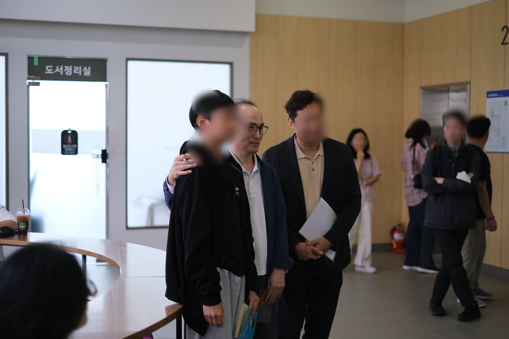
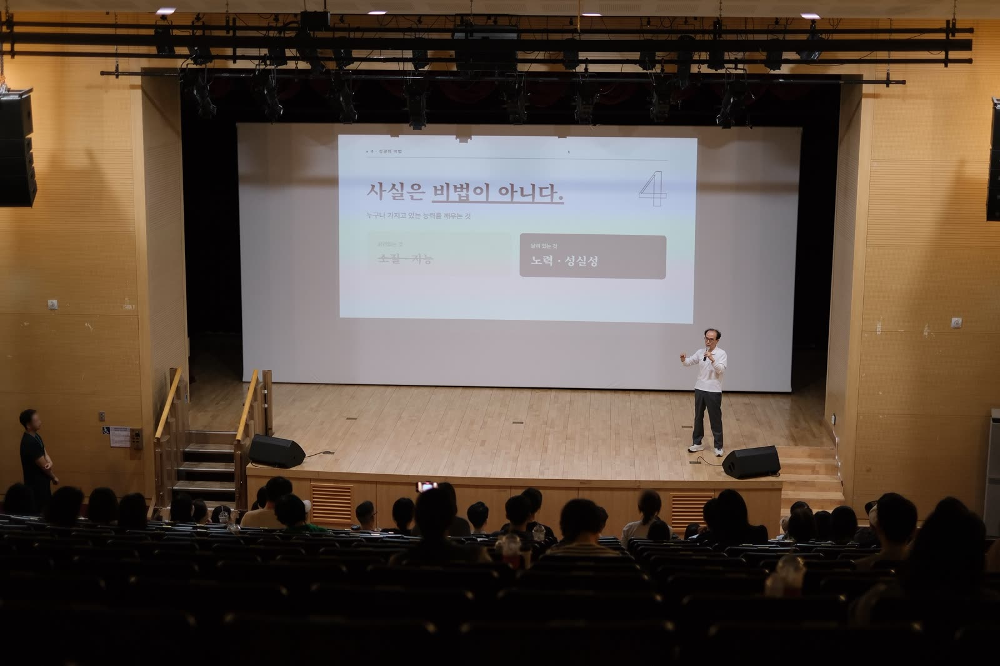
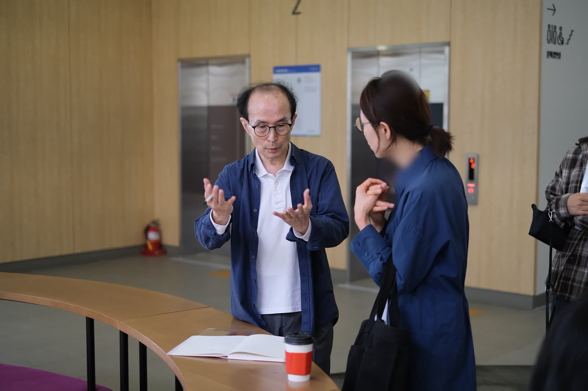
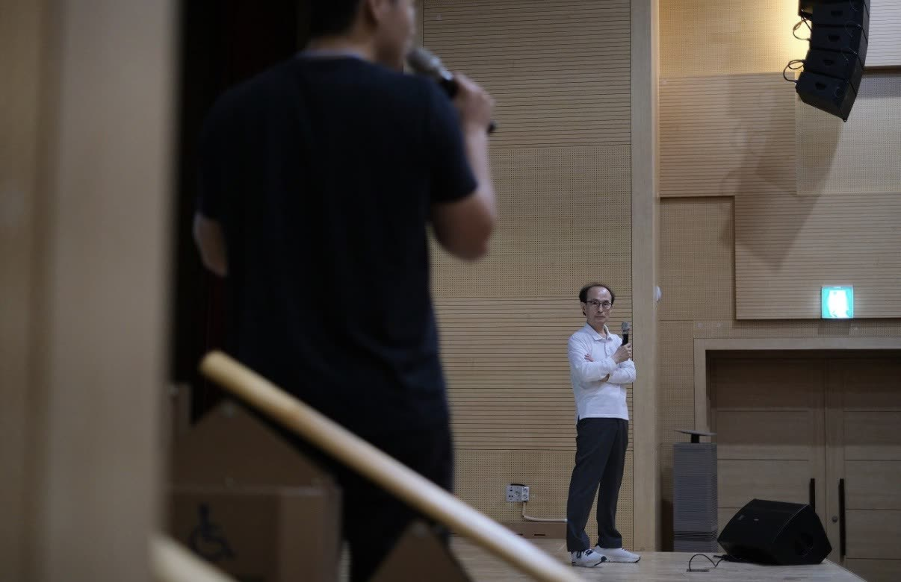
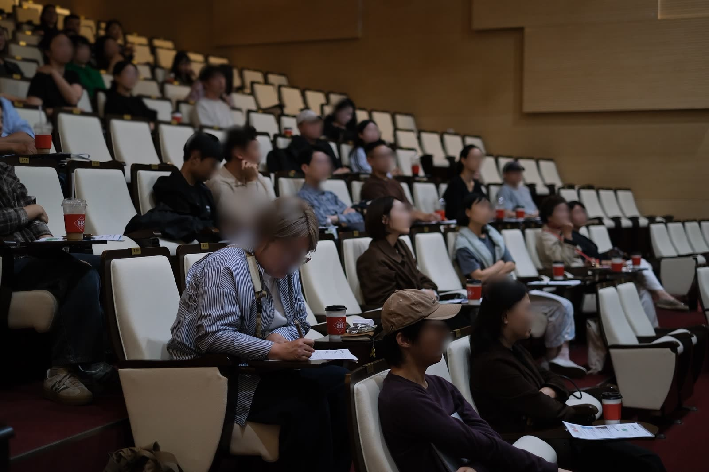
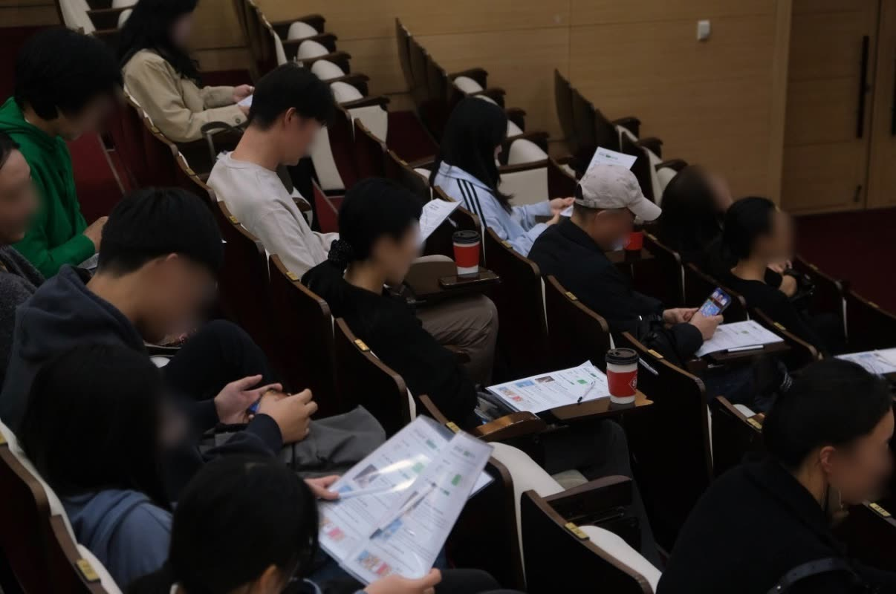
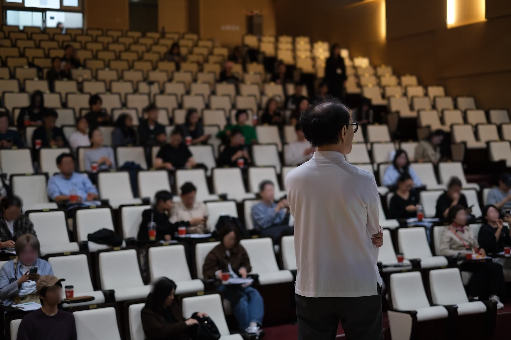
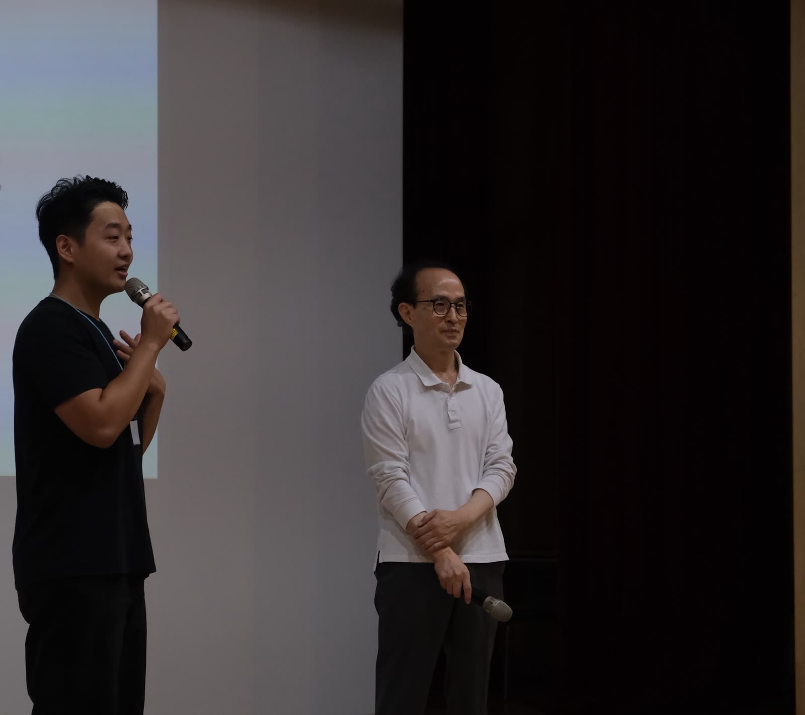
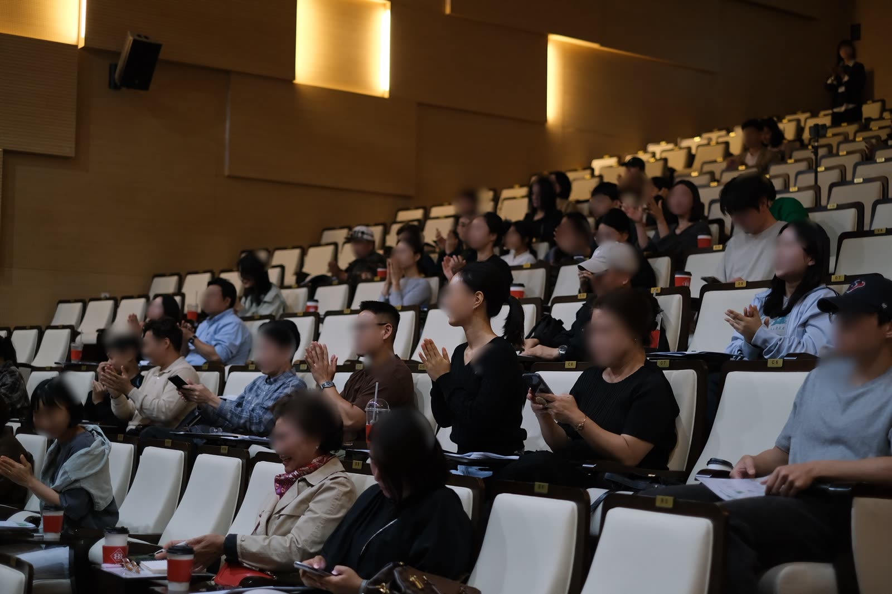
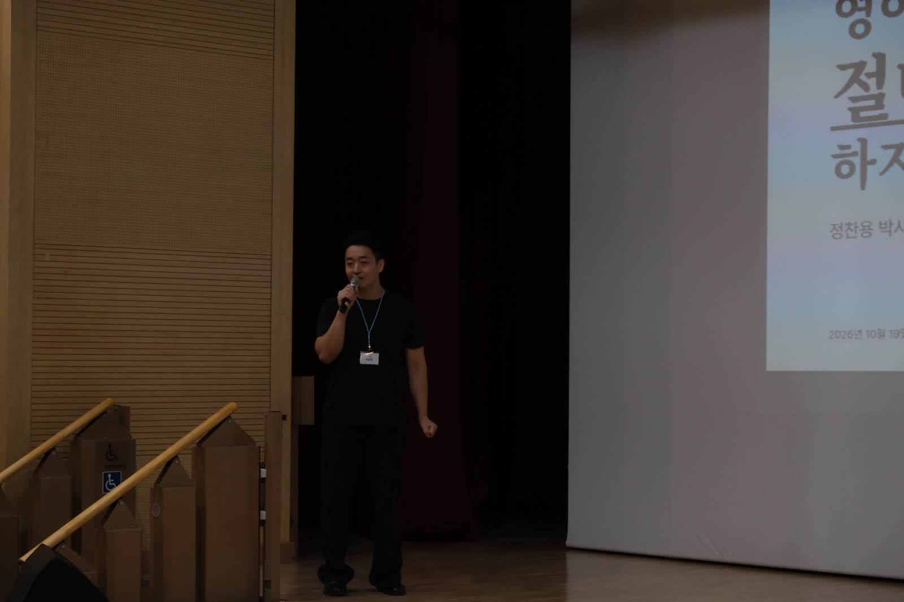

그날 정말 행복했습니다. 와 주신 모든 분들, 너무 감사합니다.
강연이 끝났는데도 사람들이 자리를 뜨지 않았다.
박사님 앞에 줄이 생겼고, 사진 찍는 데만 30분이 걸렸다. 박사님은 예전에 수백 명 앞에서 강의하실 때도 다들 듣고 금방 나갔는데, 이렇게 끝나고 남아서 사진을 찍는 건 참 신기한 경험이라고 하셨다.

내 인생에서 가장 힘들 때 대가 없이 나를 가르쳐 주신 분이다. 그분 앞에 사람들이 줄을 서 있는 걸 옆에서 지켜보는 내내, 그냥 너무 행복했다.

멀리서 오신 분이 많았다. 통영에서는 박사님 책을 기억하고 먼 길을 오신 분이 있었고, 강원도 원주에서 오신 분도 있었다. 월요일 오전 11시에 남양주까지 와 주신 거다.
해외에서 사업을 하시는 분은 박사님 방법으로 영어를 익혔다며, 한국에 오는 일정을 강연 날에 맞추고 아들까지 데리고 오셨다. 현장에서 사람들과 얘기를 나누다가, 박사님이 인생의 은인인 사람이 자기만이 아니었다고 하셨다.
박사님 방법으로 익힌 영어 덕분에 돈도 많이 벌었다는 분도 계셨고, 아이들한테 영어를 가르치는 현직 선생님 한 분은 박사님이 정말 많은 사람의 인생을 바꿔 주셨다고 하셨다.


예전에 박사님이 만드신 토스잉글리시를 다니며 영어를 익혔다는 분은, 자기 영어 이야기를 여덟 편에 나눠 스레드에 올려 주셨고, 현장에서도 그 이야기를 들려주셨다.
영어 강연회라기보다, 박사님 덕분에 영어에서 해방된 사람들의 성공담 잔치 같았다. 하긴 수백만 부가 팔린 책이니, 그럴 만도 하다.
대학생 때 영어공부 절대로 하지 마라, 이 책으로 공부했는데 책이 없어져서 중고로 다시 샀다는 분이 있었다.
박사님 책을 새로 사려고 찾아보니 거의 다 절판이더라는 분도 계셨다. 강연이 열린 정약용도서관에도 이 책은 없고, 그 뒤에 나온 두 권만 있더라는 얘기도 들었다.

강연장은 오랜만에 열린 박사님 팬미팅 같았는데, 정작 그 책은 이제 새로 구하기도 어렵다.
그 얘기들을 들으면서, 이 책에 다시 불씨를 지펴도 되겠다는 생각이 들었다. 집 책장 어딘가에 아직 이 책이 꽂혀 있는 분들도 꽤 계실 거다.
강연이 끝나고 문자가 계속 왔다.
수많은 영어 공부법 사이에서 이제야 길을 찾은 것 같다는 분, 직접 해 본 사람 얘기라 박사님 말씀이 더 잘 와 닿았다는 분, 다음엔 자기가 커피를 사 주고 싶다는 분도 계셨다.

삼 년이고 사 년이고 걸려도 이번엔 꼭 꾸준히 해 보겠다는 분도 있었다.
문자를 하나씩 읽으면서, 이 책 한 권이 이렇게 많은 사람의 시간을 바꿔 놓았구나 싶었다.
물론 더 잘됐으면 하는 마음에 아쉬운 점을 적어 주신 분들도 있었다.
시작이 늦었고 주차장이 꽉 찼다는 얘기, 내 말이 길었다는 얘기, 처음 온 사람은 어디서부터 시작해야 할지 아직 막막하다는 얘기도 들었다.

사실 이 강연은 이 책을 다시 알리고 싶다는 열정 하나로 시작한 일이라, 처음부터 끝까지 완전 아마추어였다.
그래서 이런 말들이 더 고맙다. 다음에 또 기회가 생기면, 받은 숙제를 하나씩 풀어서 더 나은 자리로 찾아뵙고 싶다.

내가 제일 바랐던 건 박사님이 다시 힘을 얻으시는 거였다. 사진 찍으시는 모습을 옆에서 보니, 정말 그렇게 되신 것 같다. 가까이서 뵐수록 정말 훌륭하신 분이다.
강연 전날, 이 강연을 영어 공용화 운동의 첫날이라고 썼다. 와 주신 분들이 그 첫 움직임이 돼 주셨다.
앞으로 이런 분들을 더 많이 찾아다니고 싶다. 언젠가 이 영어 공용화 운동을 꼭 해내 보고 싶다는 마음이, 이번에 훨씬 커졌다.

